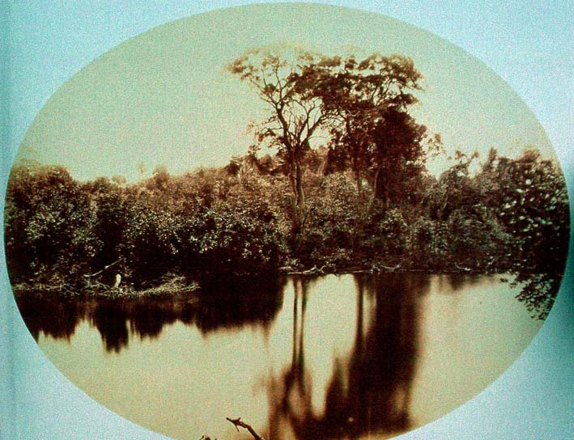

|
|  |
|
Augusto Stahl, Paisagem de Manguezal
|
Arguably, the importance of landscape as a bearer of national identity in the visual arts occurred at the moment of its historical demise. Pernambucan photographer Augusto Stahl´s series of landscape scenes taken from the moving platform of the recently inaugurated Recife-São Francisco railway, are in this sense complex visual elegies: their condition of possibility and mode of production announce the redundancy of the compositional aesthetic of the picturesque that still attempts to construct an image of a self-contained, intact natural ensemble from which the observer and the machinic ensemble of iron track and steam-powered engine onto which his camera is mounted, are carefully excised. Yet what Stahl´s camera also records is what cultural historian Wolfgang Schivelbusch has described as the transformation of the landscape into geographical space, a 'destruction of the in-between' that manifests itself in the disappearance of the foreground from the image. If the foreground, in the picturesque image and the physiology of seeing on which it had relied, marked the point of relation and exchange between traveller and landscape, its excision gives way to a new kind of 'panoramic gaze', which 'does not belong to the same space anymore as the objects it observes. It sees the objects, landscapes etc. through the apparatus on which it moves through the world.'
|